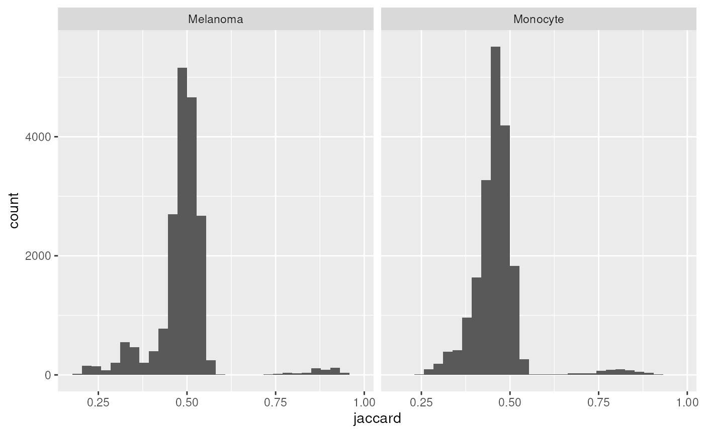
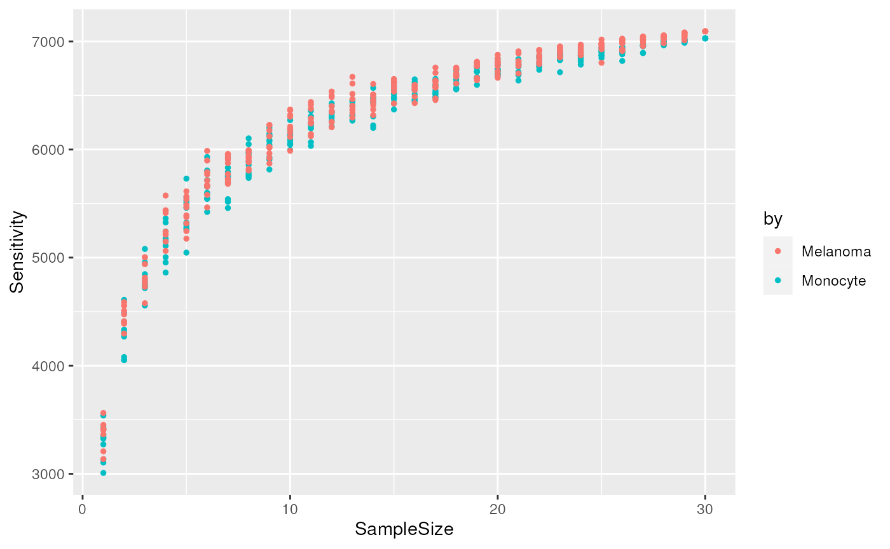
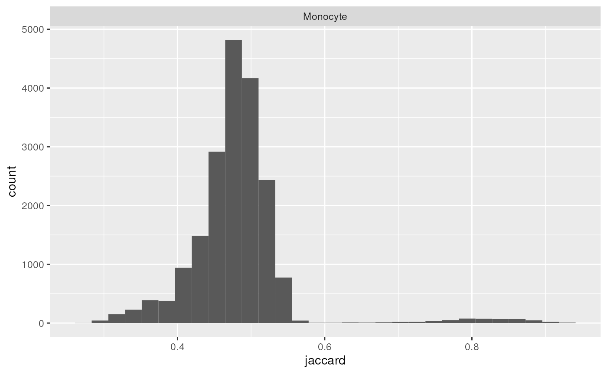

Reporting missing values for Single Cell Proteomics
Christophe Vanderaa
Laurent Gatto
12 November 2026
Source:vignettes/reporting_missing_values.Rmd
reporting_missing_values.RmdIntroduction
This vignette demonstrates how to use scp to report
missing values, following our recommendations in Vanderaa and Gatto (2023). Briefly, we recommend
reporting at least 4 metrics:
- Total sensitivity, i.e. the total number of features found in the dataset
- Local sensitivity, i.e. the number of features per cell
- Data completeness, i.e. the proportion of values that are not missing
- Number of samples
We will also demonstrate how to estimate total sensitivity when the number of samples is too low and how to report data consistency using the distribution of the Jaccard indices.
In this vignette, we will assume you are familiar with the
scp framework. If this is not the case, we suggest you
first read the introduction
vignette.
Minimal data processing
First, we load the scp package and retrieve a real-life
dataset from the scpdata package.
Next, we reduce the size of the dataset to the 30 first acquisitions. This allows for a fast execution of the code for this vignette while still being a representative demonstration on a real dataset. We also keep only the feature annotations that will be used later in the vignette.
leduc <- leduc[, , 1:30]
#> Warning: 'experiments' dropped; see 'drops()'
#> harmonizing input:
#> removing 8057 sampleMap rows not in names(experiments)
#> removing 1872 colData rownames not in sampleMap 'primary'
leduc <- selectRowData(leduc, c(
"Sequence", "Leading.razor.protein", "Reverse",
"Potential.contaminant", "PEP"
))This is the actual minimal processing: 1. filtering contaminant and low-quality features 2. replacing zeros by missing values 3. keep only samples that correspond to single cells 4. remove the feature absent in all samples 5. aggregate PSMs to peptides 6. join all runs in a single large assay
## 1.
leduc <- filterFeatures(leduc, ~ Reverse != "+" &
Potential.contaminant != "+" &
PEP < 0.01)
## 2.
leduc <- zeroIsNA(leduc, i = names(leduc))
## 3.
leduc <- subsetByColData(
leduc, leduc$SampleType %in% c("Monocyte", "Melanoma")
)
## 4.
leduc <- filterNA(leduc, i = names(leduc), pNA = 0.9999)
leduc <- dropEmptyAssays(leduc)
## 5.
leduc <- aggregateFeatures(
leduc, i = names(leduc), name = paste0("peptides_", names(leduc)),
fcol = "Sequence", fun = colMedians
)
#> | | | 0% | |== | 3% | |===== | 7% | |======= | 10% | |========= | 13% | |============ | 17% | |============== | 20% | |================ | 23% | |=================== | 27% | |===================== | 30% | |======================= | 33% | |========================== | 37% | |============================ | 40% | |============================== | 43% | |================================= | 47% | |=================================== | 50% | |===================================== | 53% | |======================================== | 57% | |========================================== | 60% | |============================================ | 63% | |=============================================== | 67% | |================================================= | 70% | |=================================================== | 73% | |====================================================== | 77% | |======================================================== | 80% | |========================================================== | 83% | |============================================================= | 87% | |=============================================================== | 90% | |================================================================= | 93% | |==================================================================== | 97% | |======================================================================| 100%
## 6.
leduc <- joinAssays(
leduc, i = grep("^peptides_", names(leduc)), name = "peptides"
)What about proteins? if we were interested in
reporting missing values at the protein level, we simply need to change
fcol = "Sequence" to
fcol = "Leading.razor.protein" in
aggregateFeatures().
Report missing values
We can now compute the metrics of interest. We recommend computing
these for each cell type separately, since biological properties
specific to the cell type could influence the outcome. You can perform
this using reportMissingValues(). We provide the dataset
and point towards the assay with the peptide quantification matrix
(peptides). The metrics are computed based on the cell
annotation SampleType that is available in the
colData.
reportMissingValues(leduc, "peptides", by = leduc$SampleType)
#> LocalSensitivityMean LocalSensitivitySd TotalSensitivity Completeness
#> Monocyte 2664.213 367.7552 7028 0.3751356
#> Melanoma 2958.851 430.9701 7093 0.4166223
#> NumberCells
#> Monocyte 197
#> Melanoma 195Advanced criteria
Jaccard index distribution
The Jaccard index between a pair of cells is the number of features
shared by the two cells divided by the number of features identified in
any of the two columns. This provides a good measure of how consistent
the identifications are across single-cells. Again, biological
differences between cell types may decrease the consistency between
single cells and we therefore suggest to compute the Jaccard index for
each cell type separately. We compute the Jaccard index using
jaccardIndex().
ji <- jaccardIndex(leduc, "peptides", by = leduc$SampleType)The function returns a data.frame that we visualize
using the ggplot2 package.
library("ggplot2")
ggplot(ji) +
aes(x = jaccard) +
geom_histogram() +
facet_grid(~ by)
#> `stat_bin()` using `bins = 30`. Pick better value `binwidth`.
The Jaccard indices peak around 50 %, meaning that about half of the features are consistently found across single-cells within the same cell type. Note also that some pairs of cells have consistency above 75 %. These are pairs of cells from the same acquisition runs that were multiplexed together with TMT labelling.
Assessing the total sensitivity
To assess whether we can accurately estimate the total sensitivity,
we generate a cumulative sensitivity curve (CSC). More precisely, we
sample the identification matrix for an increasing number of cells (or
runs) and count the number of distinct features found across the sampled
cells. We repeat each sampling multiple times to account for the
stochasticity of the approach. The approach is implemented in
cumulativeSensitivityCurve(). Again, we compute the curve
for each cell type separately. In the leduc dataset,
several cells are acquired in an MS run. When a features is identified
in a cell, it is most of the time also identified in all other cells of
that run, and this will distort the cumulative sensitivity curve.
Therefore, the function provides a batch argument to
account for this. Finally, nSteps defines the number of
random draws with increasing sample size, and niters
defines how many times each draw must be iterated.
csc <- cumulativeSensitivityCurve(leduc, "peptides", by = leduc$SampleType,
batch = leduc$Set, niters = 10,
nsteps = 30)The function returns a data.frame that we visualize
using the ggplot2 package.
(plCSC <- ggplot(csc) +
aes(x = SampleSize, y = Sensitivity, colour = by) +
geom_point(size = 1))
The cumulative sensitivity does not reach a plateau. This means that
we underestimated the total sensitivity in the previous section. We use
predictSensitivity() to predict the total sensitivity from
these curves. The function fits an asymptotic regression model to assess
the relationship between the sensitivity and the sample size. Then, it
uses the model to predict the sensitivity for any sample size. (supplied
through nSamples). The function requires the
data.frame generated by
cumulativeSensitivityCurve(). To assess the quality of the
fit, we first predict the sensitivity for the range of sample size.
predCSC <- predictSensitivity(csc, nSample = 1:30)
plCSC + geom_line(data = predCSC)
We finally predict the total sensitivity, that is the sensitivity if we had an infinite number of samples.
predictSensitivity(csc, nSamples = Inf)
#> SampleSize Sensitivity by
#> 1 Inf 7199.206 Monocyte
#> 2 Inf 7271.888 MelanomaThe total sensitivity is predicted to be about 7200 peptides for both cell types. So in the previous section, we underestimated the total sensitivity by about 150 peptides.
License
This vignette is distributed under a CC BY-SA license.